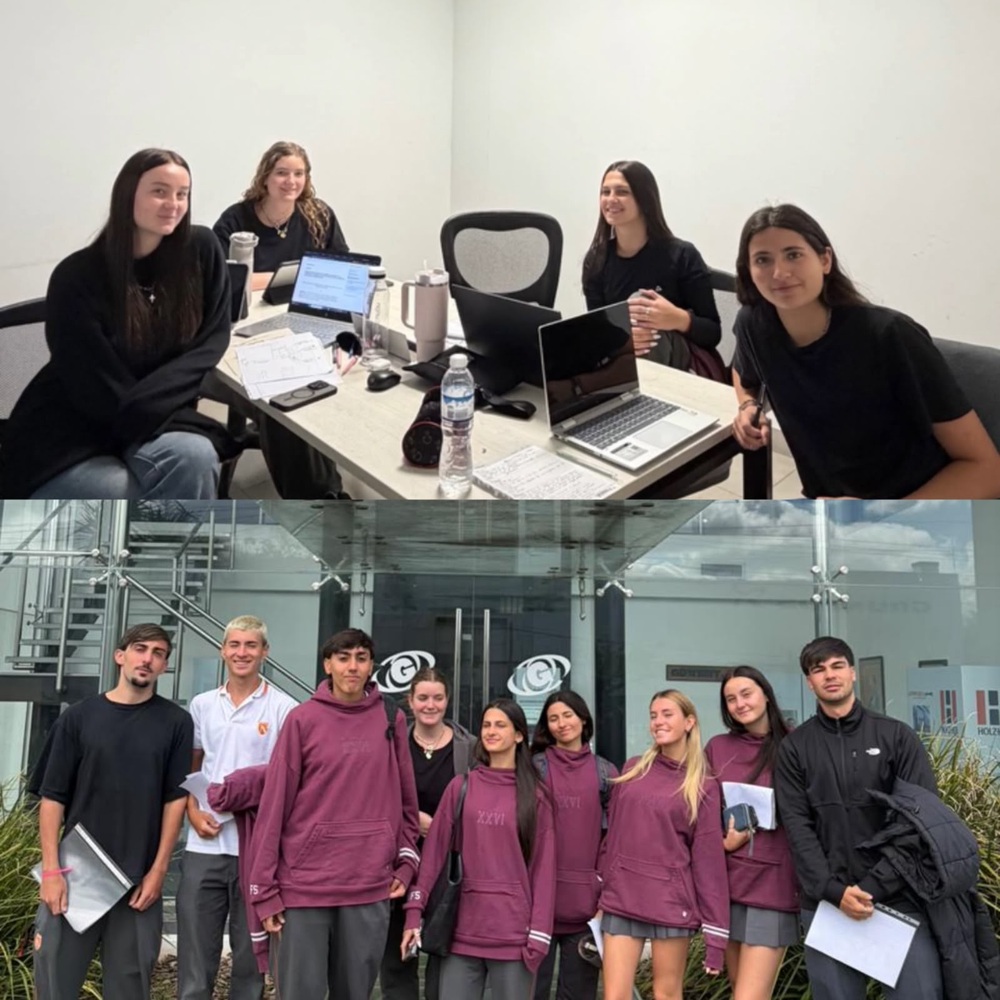

Este año tuve la oportunidad de hacer una pasantía. Donde fue un inicio, un paso chiquito y una simulación de un trabajo. Tuve que investigar sobre las normas de las cocinas sin gluten y utilizar esa información para proponer una nueva distribución del espacio. Por eso, considero que tengo la habilidad de “Autonomía”, porque puedo tomar la iniciativa para aprender y buscar soluciones, aunque siempre esté dispuesta a pedir ayuda cuando la necesito. Intento resolver las cosas por mi cuenta, buscar información cuando no sé algo y aprender nuevas herramientas para poder avanzar.
Volver a las habilidades© 2026 - Mi Portfolio